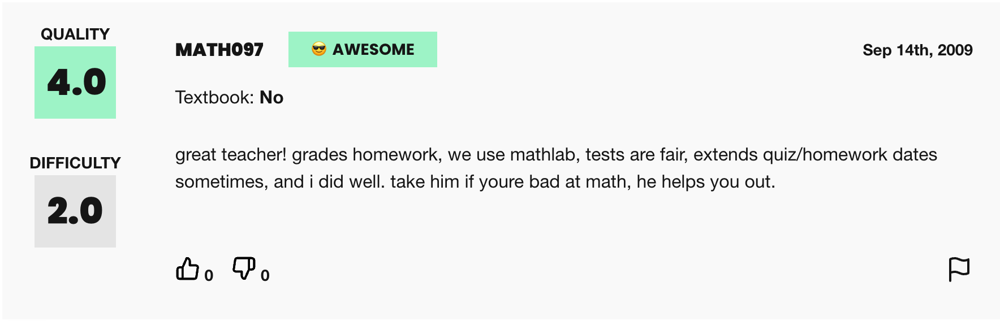
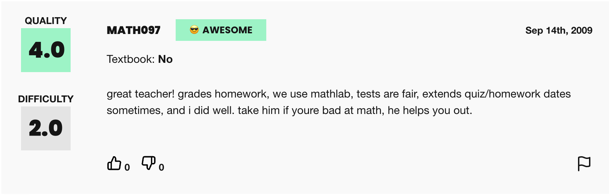

with open(r'profs_1244.txt', 'r') as f: profs = [i.strip() for i in f.readlines()]Do students describe professors differently based on gender?
Language plays a crucial role in shaping our perceptions and attitudes towards gender in the workplace, in classrooms, and personal relationships. Studies have shown that gender bias in language can have a significant impact on the way people are perceived and treated. For example, research has found that job advertisements that use masculine-coded language tend to attract more male applicants, while those that use feminine-coded language tend to attract more female applicants. Similarly, gendered language can perpetuate differences in the classroom.In this project, we’ll using scraped student reviews from ratemyprofessors.com to identify differences in language commonly used for male vs. female professors, and explore subtleties in how language in the classroom can be gendered.This excellent tool created by Ben Schmidt allows us to enter the words and phrases that we find in our analysis and explore them in more depth. We’ll do this at the end.Catalyst also does some incredible work on decoding gendered language.
1. Scraping the web for reviews of professors
Text data––especially gendered text data, is hard to come by. Web scraping can be a helpful data collection tool when datasets are unable for this kind of work. We can write web scrapers to compile datasets on job descriptions, freelancer reviews, and, as in our use-case, professor reviews by students.ratemyprofessors.com provides an insightful combination of qualitative and quantitative metrics that we can analyze.Although the data on their websites is not labeled by gender, we’ll use pronouns used by students to label professors “Male” or “Female”. Of course, this approach is not perfect, as it relies on the students’ use of pronouns. Professors with non-binary pronouns will also be under-represented in the data, since very few reviews will have them, and so it’s not trivial to write an algorithm to detect them. These are definitely important questions in the world of gender analysis though, so we encourage you to pick them up as extensions of this project!
Task 1a. What relevant packages do we need for web scraping and reading in data?
::: {#5d32b671-a5a9-4b1c-b730-dbd276406a93 .cell jupyter=‘{“outputs_hidden”:false,“source_hidden”:false}’ executionTime=‘3473’ lastSuccessfullyExecutedCode=’# Used to open urls from urllib.request import urlopen
Used to parse html
from lxml import etree
Used to pause code intermittently so that our scraper is not blocked
import time
For data manipulation and analysis
import pandas as pd
To access our data filenames so we can read them
import os’ executionCancelledAt=‘null’ lastExecutedAt=‘1719739817521’ lastExecutedByKernel=‘9896dc8c-d55f-4b46-9684-fd55c8f98cab’ lastScheduledRunId=‘null’ execution_count=1}
# Used to open urlsfrom urllib.request import urlopen# Used to parse htmlfrom lxml import etree# Used to pause code intermittently so that our scraper is not blockedimport time# For data manipulation and analysisimport pandas as pd# To access our data filenames so we can read themimport os:::
Task 1b. Which professors will we be looking at?
The web_scraping.ipynb notebook provided in this workspace provides some code using selenium that was used to find urls from ratemyprofessors.com that we’ll be scraping in this notebook.Whilst the specific selenium code used to generate this list of URLs is beyond what we can cover today, we encourage you to explore this code to understand how we generated this list of professors!For now, we’ll open the file profs_888.txt and read each professor’s url in a new line, and save this variable as profs.
Task 1c. How can we use urls to scrape relevant data about professors?
Each professor has an overall rating that looks like this and a series of reviews that look like thisThe code below can be used to iterate through all or part of the list of urls in
and a series of reviews that look like thisThe code below can be used to iterate through all or part of the list of urls in profs, and scrape them for qualtiative and quantitative data. You won’t need to run through this whole list though, because the data/ folder already contains the reviews of several professors that we have scraped for you!- The overall rating for the professor- All the individual reviews written by students about the professor- The “emotion” corresponding to each individual review: 😎 AWESOME, 😐 AVERAGE, or 😖 AWFUL- A numerical “quality” rating corresponding to each individual reviewWe won’t be using the “difficulty” ratings shown here.
::: {#432d6789-8153-4de1-baae-ae211ca49c23 .cell jupyter=‘{“outputs_hidden”:false,“source_hidden”:false}’ executionTime=‘93403’ lastSuccessfullyExecutedCode=’# USE ONLY ONE OF THE FOLLOWING FOR STATEMENTS
1. Sample code to loop through the whole list of professors
for s in (range(40, len(profs),10)):
2. Sample code to loop through the first 10 professors
for s in (range(0, 10, 10)):
texts = [] # Initialzie an empty array
print((s, s+10)) # Iterate through 10 professors at a time
for url in profs[s:s+10]: # Iterate through this block
time.sleep(8) # To prevent sending too many requests at once
r = urlopen(url) # Open URL
htmlparser = etree.HTMLParser() # Instantiate a parser to parse HTML
tree = etree.parse(r, htmlparser) # Parse HTML returned by the url
text = tree.xpath(\'//*[@id="ratingsList"]/li[*]/div/div/div[3]/div[3]/text()\') # Extract reviews
ratings = tree.xpath(\'//*[@id="root"]/div/div/div[3]/div[2]/div[1]/div[1]/div[1]/div/div[1]\') # Extract ratings
emotion = tree.xpath(\'//*[@id="ratingsList"]/li[*]/div/div/div[1]/div[1]/div[2]/text()\') # Extract emotion
quality = tree.xpath(\'//*[@id="ratingsList"]/li[*]/div/div/div[2]/div[1]/div/div[2]\') # Extract quality
texts.append((url,
text,
[i.text for i in ratings][0],
emotion,
[i.text for i in quality],
)) # Append metrics to empty list
print() # Print new line for readability
df = pd.DataFrame(texts, columns = [\'prof\',\'review\', \'rating\',\'emotion\',\'quality\']) # Create DataFrame from texts
df.to_csv(f\'df_{s}_to_{s+10}.csv\') # Write result to df in blocks of 10 professors at a time
time.sleep(10) # Pause to prevent sending too many requests at once' executionCancelledAt='null' lastExecutedAt='1719739922919' lastExecutedByKernel='9896dc8c-d55f-4b46-9684-fd55c8f98cab' lastScheduledRunId='null' outputsMetadata='{"0":{"height":59,"type":"stream"}}' execution_count=3}# USE ONLY ONE OF THE FOLLOWING FOR STATEMENTS# 1. Sample code to loop through the whole list of professors # for s in (range(40, len(profs),10)):# 2. Sample code to loop through the first 10 professorsfor s in (range(0, 10, 10)): texts = [] # Initialzie an empty array print((s, s+10)) # Iterate through 10 professors at a time for url in profs[s:s+10]: # Iterate through this block time.sleep(8) # To prevent sending too many requests at once r = urlopen(url) # Open URL htmlparser = etree.HTMLParser() # Instantiate a parser to parse HTML tree = etree.parse(r, htmlparser) # Parse HTML returned by the url text = tree.xpath('//*[@id="ratingsList"]/li[*]/div/div/div[3]/div[3]/text()') # Extract reviews ratings = tree.xpath('//*[@id="root"]/div/div/div[3]/div[2]/div[1]/div[1]/div[1]/div/div[1]') # Extract ratings emotion = tree.xpath('//*[@id="ratingsList"]/li[*]/div/div/div[1]/div[1]/div[2]/text()') # Extract emotion quality = tree.xpath('//*[@id="ratingsList"]/li[*]/div/div/div[2]/div[1]/div/div[2]') # Extract quality texts.append((url, text, [i.text for i in ratings][0], emotion, [i.text for i in quality], )) # Append metrics to empty list print() # Print new line for readability df = pd.DataFrame(texts, columns = ['prof','review', 'rating','emotion','quality']) # Create DataFrame from texts df.to_csv(f'df_{s}_to_{s+10}.csv') # Write result to df in blocks of 10 professors at a time time.sleep(10) # Pause to prevent sending too many requests at once(0, 10)
:::
text['Tests are way too hard for a course that should be straight forward. Ive taken exams in the past that were worth 300 points, but thats the entire class grade. 3 exams, 100 points each, thats it. Mainly based on Essay Questions and 25 multiple choice. Avoid if you can. If you have to take this class just make sure you dont take it lightly.',
"Professor Kobak is very passionate about developmental psychology and it is evident in his lectures. His lectures are insanely boring. They seriously seem eternal, but he does not put his full slides online so it is good to go. Also he has clicker questions he uses for extra credit. If you don't read you will not get an A.",
'The classes were boring, the exams were impossible, and I struggled for my C.',
"This class shouldn't be as hard as it is made. Exams are confusing and a few questions were incomprehensible on each one. To make it worse, no specifics are given as to what will be on the exam, just how many questions from each chapter will be on it. If you have the time to do every single reading you can do well, but you won't be able to cruise.",
'Dull, confusing, and vague. You will never know where the exam material is coming from. AVOID this professor...has no idea how a good psych class is taught. Easy B nothing more',
'AWFUL, BORING, puts you to sleep, tests are confusing',
'nice professor but the class gets really boring. uses powerpoints in class and there are 3 tests which constitute your whole grade. tests are pretty tricky, you need to study at least a couple nights in advance for them and even then you might still just get a B',
"Grade based off of 3 Multiple Choice tests (50 questions on each). No rounding or extra credit but its an interesting class. Dr. Kobak is a cool dude. If you're a psyc or human services major the tests will be obvious. Regardless, it's a totally fair class. Take it!",
"Kobak is a really nice guy! Classes seem pointless but his test questions come directly form the powerpoint! Don't need the textbook at all but you have to study for the tests. Go to class and study the material and you will definitely get at least a B.",
'This professor is adorable, and really funny. There was a lot of reading for each class, and he uses slides and would put them online before class. He shows a lot of good movie clips. Only 3 tests all semester and they were all multiple choice. There was a lot of material to cover, but it was an interesting class.',
"Very nice guy. Very helpful during office hours. It wasn't totally necessary to read the book, but I would at least read the summaries. Some MC questions are directly from readings. The most difficult part of the tests were the essays, and he was usually quite explicit about his expectations for them when reviewing the material prior to the test.",
'Nice guy, fine teacher. Got bored and distracted every once in a while, but I still got an A. If you are good at Psych, you will do fine.',
"This class overall was a good experience. However your grade is based on 3 tests (all multiple choice). Even though he does posts power points he DOES NOT include all the slides given in class. So it's smart to attend class. Plus he gives questions that appear on the test and he doesn't post those either. Overall, a good professor.",
"I thought that this was a good class. Helps if you have some interest in child development. No extra assignments or papers, just three exams. Fantastic if you don't want to have to do much work throughout the semester, bad if you don't take tests well. Essays count for a lot on the test so if you can write clearly, you'll probably do well.",
'Enjoyable class! Posts powerpoints, Attending class helps on exams.',
"great guy. he means well. slides are great and he posts them online after classes. if you do go to classes he'll give you sample mutliple choice questions that actually appear on the exams. sometimes questions on exams are hard to understand though. definitely do the extra credit!",
'Slides are all over the place. to study you need to read which is a pain because his notes jump from chapter 1 to 14 without even clarifying. doesnt help at all when asked. dont recommend taking him',
'Extremely long powerpoints but will e-mail slides to class after presentation. Nice man, however seems somewhat aloof as most of his slides are disorganized and directly from the text. Class is important for learning exam material, but can do well just by reading the book. Do the extra credit and read the material- it would be hard not to pass.',
'Kobak is a very friendly, light-hearted guy who knows his stuff. Plenty of short films to make class enjoyable. 3 tests plus 10 possible pt. extra credit. Do the extra credit, you\'re almost guarenteed perfect credit. A "B" is definitely attainable if you put in some effort. I recommend him.',
'No Comments']2. Reading pre-scraped data
Task 2a. How can we read a directory of scraped professor reviews and concatenate them?
Since we have already scraped reviews from several professors for you, let’s begin by concatenating all the files in the data folder provided. These have already been scraped for you.Since review, emotion and quality are lists but were recorded in string form, we’ll apply eval() to them to turn them back from a string into a list.
df = pd.concat([pd.read_csv('data/'+i, index_col=0) for i in os.listdir('data')]).reset_index(drop=True)df['review'] = df['review'].apply(lambda x: eval(x))df['emotion'] = df['emotion'].apply(lambda x: eval(x))df['quality'] = df['quality'].apply(lambda x: eval(x))Task 2b. What does the final shape of our DataFrame look like?
Browse the df below to familiarize yourself with the dataset we’ll be working with. The DataFrame contains one row for each professor, containing:- Their url- All the raw text reviews for that professor- Their overall rating- All the emotion labels associated with reviews of that professor- All quality ratings assigned to that professor
df| prof | review | rating | emotion | quality | |
|---|---|---|---|---|---|
| 0 | https://www.ratemyprofessors.com/professor?tid... | [The Best Professor at Kettering. Just rememb... | 4.6 | [awesome, awesome, awesome, awesome, awesome, ... | [5.0, 4.0, 5.0, 4.5, 5.0, 4.5, 2.5, 5.0, 5.0, ... |
| 1 | https://www.ratemyprofessors.com/professor?tid... | [Awesome prof! He picks really great course ma... | 4.2 | [awesome, awesome, awesome, awesome, awesome, ... | [4.5, 4.5, 4.5, 5.0, 4.0, 3.0, 5.0, 2.0, 3.0, ... |
| 2 | https://www.ratemyprofessors.com/professor?tid... | [He is a macho guy. I ilke him while he talks ... | 3.6 | [awesome, awesome, awesome, awesome, average, ... | [4.0, 5.0, 4.5, 4.5, 3.5, 5.0, 1.5, 4.5, 1.5, ... |
| 3 | https://www.ratemyprofessors.com/professor?tid... | [I love Dr. Barker! His lectures are interesti... | 3.0 | [awesome, average, awful, awful, awful, awful,... | [5.0, 3.0, 2.5, 2.0, 2.5, 2.5, 3.5, 2.0, 5.0, ... |
| 4 | https://www.ratemyprofessors.com/professor?tid... | [i hate this stupid man he sucks and he's a ho... | 2.8 | [awful, awful, awful, awful, awful, awful, awf... | [1.0, 1.0, 1.5, 1.5, 1.0, 1.0, 1.0, 1.0, 1.0, ... |
| ... | ... | ... | ... | ... | ... |
| 575 | https://www.ratemyprofessors.com/professor?tid... | [Connait très bien sa matière. Le cours ... | 3.5 | [awesome, awful, awesome, awful, awesome, awes... | [4.0, 2.0, 4.0, 1.5, 5.0, 5.0, 4.5, 1.0, 4.5, ... |
| 576 | https://www.ratemyprofessors.com/professor?tid... | [Really knowledgeable guy, I learned a lot., N... | 2.8 | [awesome, awful, average, awful, awful, averag... | [5.0, 2.0, 3.0, 1.0, 1.0, 3.0, 4.5, 5.0, 5.0, ... |
| 577 | https://www.ratemyprofessors.com/professor?tid... | [Love good ol' Carmichael. Sadly, he is retiri... | 3.8 | [awesome, average, average, awesome, awesome, ... | [5.0, 3.0, 3.0, 5.0, 5.0, 4.0, 5.0, 4.0, 5.0, ... |
| 578 | https://www.ratemyprofessors.com/professor?tid... | [Mike is easily the best ENGL prof I've had (a... | 4.4 | [awesome, awesome, awesome, awesome, awesome, ... | [5.0, 5.0, 5.0, 5.0, 5.0, 5.0, 5.0, 5.0, 4.5, ... |
| 579 | https://www.ratemyprofessors.com/professor?tid... | [In Mr. Ellul's class, students should have kn... | 2.5 | [awesome, awesome, awesome, awesome, awesome, ... | [4.5, 4.5, 4.5, 5.0, 5.0, 2.0, 1.0, 1.0, 2.5, ... |
580 rows × 5 columns
3. Text Analysis
3a. What additional package imports are required for data visualization and NLP?
::: {#8d6a7a01-887d-4df1-98b6-5a3c95e35519 .cell jupyter=‘{“outputs_hidden”:false,“source_hidden”:false}’ executionTime=‘841’ lastSuccessfullyExecutedCode=’import numpy as np # For manipulating matrices during NLP
import nltk # Natural language toolkit from nltk.tokenize import word_tokenize # Used for breaking up strings of text (e.g. sentences) into words from nltk.stem.porter import PorterStemmer # Used to return the dictionary base of a word from nltk.tokenize import WhitespaceTokenizer # Used for breaking up strings of text (e.g. sentences) into words based on white space
nltk.download('punkt')
from sklearn.feature_extraction.text import TfidfVectorizer, CountVectorizer # Used to count the occurences of words and phrases from sklearn.feature_extraction import text # Using to extrat features from text
For plotting
import matplotlib.pyplot as plt import seaborn as sns sns.set(style='white')’ outputsMetadata=‘{“0”:{“height”:59,“type”:“stream”}}’ executionCancelledAt=‘null’ lastExecutedAt=‘1719740146111’ lastExecutedByKernel=‘9896dc8c-d55f-4b46-9684-fd55c8f98cab’ lastScheduledRunId=‘null’ execution_count=8}
import numpy as np # For manipulating matrices during NLPimport nltk # Natural language toolkitfrom nltk.tokenize import word_tokenize # Used for breaking up strings of text (e.g. sentences) into wordsfrom nltk.stem.porter import PorterStemmer # Used to return the dictionary base of a wordfrom nltk.tokenize import WhitespaceTokenizer # Used for breaking up strings of text (e.g. sentences) into words based on white spacenltk.download('punkt')from sklearn.feature_extraction.text import TfidfVectorizer, CountVectorizer # Used to count the occurences of words and phrasesfrom sklearn.feature_extraction import text # Using to extrat features from text# For plottingimport matplotlib.pyplot as plt import seaborn as snssns.set(style='white')[nltk_data] Downloading package punkt to /home/repl/nltk_data...
[nltk_data] Package punkt is already up-to-date!:::
3b. How can we assign gender labels to professors?
Let’s write a custom function that assigns a gender label to professors based on the pronouns most commontly used for him. Specifically:- If any of ['she', 'her', 'herself', 'shes'] occur more than 5 times across all reviews for that professor, we label the professor “F”.- If any of ['him', 'he', 'his', 'himself'] occur more than 5 times across all reviews for that professor, we label the professor “F”.
def assign_pronoun(review_list): reviews = ' '.join([str(i) for i in review_list]) tokens = word_tokenize(reviews.lower()) if sum([i in ['she', 'her', 'herself', 'shes'] for i in tokens]) > 5: return 'F' elif sum([i in ['him', 'he', 'his', 'himself'] for i in tokens]) > 5: return 'M'We’ll now assign the pronouns. We’ll also split review texts into individual “tokens”, by calling word_tokenize() from nltk.
df['pronouns'] = df['review'].apply(assign_pronoun)df.pronouns.value_counts()M 417
F 139
Name: pronouns, dtype: int643c. Are there any initial differences between male and female professors based on their overall ratings?
Let’s start with a barplot.
plt.figure(figsize=(4,4))sns.barplot(data=df, x="pronouns", y="rating", palette='magma',estimator='median')plt.show()
A boxplot overlaid with a stripplot will give us a better sense of the distribution of the data.
plt.figure(figsize=(5,5))sns.boxplot(data=df, x="pronouns", y="rating", palette='magma')sns.stripplot(x='pronouns', y='rating', data=df, color='chartreuse',jitter=0.2, size=2.5)plt.show()
Task 3d. What are the most important words being used to describe professors in reviews?
Let’s write a custom function that tokenizes and lemmatizes our list of words.- Word tokenization: process of splitting text into individual words, called tokens. A common preprocessing step in natural language processing (NLP) so that text can be analyzed and processed more easily. Methods include whitespace tokenization, regular expression-based tokenization, and rule-based tokenization. We’ll be using the word_tokenize tokenizer from nltk, with all its defaults.- Lemmatization: process of reducing words to their base or dictionary form, called the lemma. Also a common pre-processing step in NLP, so that words with a common base form are treated the same way. For example, the lemma of “am” is “be”, of “running” is “run”, and of “mice” is “mouse”.
def tokenize(text): tk = WhitespaceTokenizer() tokens = tk.tokenize(text) stems = [] for item in tokens: stems.append(PorterStemmer().stem(item)) return stems # return tokensLet’s import a list of stop words, which are common English words that we will be ignoring in our analysis. sklearn provides a common list of stop words, and we can append additional words to this list. Below, we append pronouns, along with the words “class” and “student”.
my_stop_words = text.ENGLISH_STOP_WORDS.union(["he","she","his","her", "himself","herself", "hers","shes" "class","student"])For the purpose of analyzing review texts, we want to move from having one row for each professor to one row for each review. Lets do this with .explode() from pandas.
df_quality = df[(df['review'].apply(len) == df['quality'].apply(len))]q = df_quality[['pronouns','review','quality']].explode(['review','quality'], ignore_index=True).dropna()q['quality'] = q['quality'].astype(float)TFIDF vectorization is the process of assigning scores to each review in a document based on how frequently the word occurs, normalized by how frequently the word occurs in the dataset overall.We’ll use TfidfVectorizer() to generate these scores. This will return a matrix, with as many rows as reviews, and as many columns as words in our dataset.
vec = TfidfVectorizer(tokenizer=tokenize, stop_words=my_stop_words, ngram_range=(1,4))X = vec.fit_transform(q['review'])feature_names = vec.get_feature_names_out()X is a sparse matrix. We’ll now move into filtering X for:- Male professors only- Female professors only- Rows with male professors and reviews of high quality - Rows with female professors and reviews of high quality - Rows with male professors and reviews of low quality - Rows with female professors and reviews of low quality We can explore feature importance in each of these to get a sense of which words and phrases are coming up most often in the data.
m_pos = X[(q['pronouns']=='M') & (q['quality']>=4.5),:] f_pos = X[(q['pronouns']=='F') & (q['quality']>=4.5),:] m_neg = X[(q['pronouns']=='M') & (q['quality']<2.5),:] f_neg = X[(q['pronouns']=='M') & (q['quality']<2.5),:] Let’s have a look at what language students are using to describe male professors positively. The code below will return the 300 most important ngrams.
importance = np.argsort(np.asarray(m_pos.sum(axis=0)).ravel())[::-1]tfidf_feature_names = np.array(feature_names)tfidf_feature_names[importance[:300]]array(['comment', 'great', 'hi', 'veri', 'class', 'best', 'good',
'professor', 'realli', 'teacher', "he'", 'wa', 'thi', 'make',
'help', 'easi', 'love', 'prof', 'awesom', 'know', 'class.',
'learn', 'lectur', 'amaz', 'cours', 'excel', 'just', 'test',
'alway', 'prof.', 'lot', 'work', 'nice', 'ha', "i'v", 'teach',
'teacher.', 'hi class', 'want', 'best professor', 'him.',
'professor.', 'like', 'guy', 'class,', 'dr.', 'funni', 'hard',
'need', 'read', 'know hi', 'fun', 'clear', 'materi', 'enjoy',
'great teacher', 'recommend', 'studi', 'exam', 'care', 'note',
'guy.', 'time', 'best prof', 'understand', 'best teacher',
'teacher,', 'everi', 'definit', "don't", "you'll", 'it.', 'onli',
'everyth', 'man', 'becaus', 'ani', 'fair', 'took', 'students.',
'extrem', 'veri good', 'use', 'had.', 'knowledg', 'explain',
'prof!', 'interesting.', 'well.', 'grade', 'veri help', 'question',
'fantast', 'math', 'book', 'thi class', 'hi lectur', 'write',
'highli', 'think', 'doe', 'attend', 'actual', 'professor,',
'thing', 'pretti', 'stuff', 'assign', 'prof,', 'hi students.',
'got', 'helpful.', 'befor', 'favorit', 'peopl', 'sure', 'him!',
'way', 'care hi', "it'", 'long', 'talk', 'absolut', 'super',
'guy,', '-', 'passion', 'littl', 'funny,', 'tough', 'hi class.',
'cool', '&', 'tri', 'professor!', 'great teacher,', 'wish', 'tell',
'person', 'a.', 'good teacher', 'helpful,', 'final', 'make sure',
'year', 'expect', 'difficult', 'make class', 'come', 'ask',
'love thi', 'subject', 'everyon', 'teacher!', 'man.', 'hi test',
'look', 'u', 'material.', 'answer', 'listen', 'sens', 'pay',
'class wa', 'great prof.', 'paper', 'offic', 'great professor.',
'wa veri', 'worth', 'say', 'far', 'histori', "you'r", 'hi stuff',
'great teacher.', 'great prof!', 'know hi stuff', 'interesting,',
'veri easi', 'easy.', 'bit', 'learn lot', 'veri nice', "doesn't",
'veri clear', 'classes.', 'thought', "he' veri", 'best.', 'smart',
'fine.', 'anyon', "i'v had.", 'realli enjoy', 'onlin', 'you.',
'love hi', 'prepar', 'thi class.', 'stori', 'essay', 'exampl',
'entertain', 'attent', 'better', 'course.', 'mani', '2',
'homework', 'taken', 'engag', 'bad', 'great prof,', 'notes.',
'textbook', 'truli', 'realli know', 'awesome.', 'real',
'excel teacher.', "didn't", 'inform', 'miss', 'challeng', 'review',
'old', 'class!', "professor i'v", 'thi guy', 'problem', 'let',
'genuin', 'great!', 'too.', 'did', 'work.', 'topic', 'great guy.',
"he'll", 'best!', 'enjoy hi', 'brilliant', 'veri knowledg',
'concept', 'overal', 'bore', "i'm", 'dure', "teacher i'v",
'alway help', 'approach', 'stuff.', 'feel', 'thi professor',
'pay attent', 'intellig', 'mark', 'effort', 'midterm', 'great.',
'extra', 'tests.', 'veri helpful.', 'instructor', 'text', 'reason',
'hi stuff.', 'taught', 'quizz', 'goe', 'lab', 'end', 'teacher!!',
'easy,', ':)', 'lot.', 'great professor', 'know hi stuff.',
'probabl', 'grade.', 'quit', 'pass', 'exams.', 'fair.', 'kind',
'hand', 'incred', 'avail', 'realli know hi', 'highli recommend',
"can't", 'wonder', 'humor', 'lectures.', 'job', 'him,',
'great prof', 'major', 'hour'], dtype=object)Let’s have a look at what language students are using to describe female professors positively. The code below will return the 300 most important ngrams.
importance = np.argsort(np.asarray(f_pos.sum(axis=0)).ravel())[::-1]tfidf_feature_names = np.array(feature_names)tfidf_feature_names[importance[:300]]array(['comment', 'veri', 'great', 'class', 'help', "she'", 'easi',
'realli', 'best', 'wa', 'good', 'professor', 'thi', 'teacher',
'make', 'love', 'lot', 'prof', 'class.', 'work', 'learn', 'prof.',
'nice', 'lectur', 'cours', 'like', 'amaz', 'want', 'excel',
'teacher.', 'care', 'know', 'her.', 'alway', 'ha', 'wonder',
'just', 'extrem', 'hard', 'awesom', 'recommend', 'dr.', 'need',
'test', 'fair', 'time', 'understand', 'professor.', "don't",
'studi', 'best teacher', 'teach', 'her!', 'read', 'exam', 'grade',
'assign', 'class,', 'veri help', 'highli', 'thing',
'best professor', 'helpful.', 'materi', 'clear', 'interesting.',
'super', "it'", "i'v", 'onlin', 'great.', 'awesome!', 'enjoy',
'extra', 'sure', 'ani', 'thi class', 'definit', 'students.',
'pretti', 'becaus', 'question', 'ladi', 'pay', 'everi', 'her,',
'talk', 'mrs.', 'veri nice', 'actual', "you'll", 'work,',
'passion', 'took', 'teacher!', 'veri good', 'homework',
"she' veri", 'everyth', 'fun', 'class!', 'best prof', 'professor,',
'well.', 'come', 'onli', 'better', '-', 'think', 'great prof.',
'explain', 'wa veri', 'real', 'highli recommend', 'doe', 'tough',
'wish', 'world', 'a.', 'excel prof', 'long', 'use', 'littl',
'person', 'material.', 'attent', 'great teacher.', 'sweet',
'veri easi', 'peopl', 'prof,', 'helpful,', 'credit', 'had.', '&',
'it.', 'anyth', 'great!', 'lab', 'knowledg', 'expect', 'prof!',
'problem', 'write', 'professor!', 'teacher,', "you'r", 'approach',
'look', 'math', 'pass', 'thi cours', 'pay attent', 'discuss',
'note', 'you.', 'absolut', 'class wa', 'course.', 'mani', 'ever!',
'befor', 'extra credit', 'sens', 'especi', 'taught', 'person.',
'got', 'learn lot', 'help.', 'bit', 'work.',
'best professor ever!', 'understand.', 'classes.', 'fair.',
'lectures.', 'ask', 'great prof', 'nice,', 'grade.', 'tell',
'year', 'lady.', 'professor ever!', 'point', 'thought', 'attend',
'cool', 'quizz', 'make sure', 'way', 'veri helpful.', 'answer',
'students,', 'fine.', "she'll", 'easi understand.', 'amazing.',
'did', 'end', 'instructor', 'great teacher', 'project', 'challeng',
'respect', 'offer', 'great professor!', 'entertain', 'essay',
'good lectur', 'veri clear', 'favorit', 'difficult', 'english',
'exampl', 'anyon', 'truli', 'great prof!', 'great teacher,', 'goe',
'realli want', "i'm", 'nice lady.', 'intellig', 'classes!',
'awsom', 'concept', 'veri helpful,', 'lot.', 'book', "doesn't",
'group', 'lectures,', 'them.', 'listen', 'kind', 'smart', '3',
'funni', "i'd", 'easy.', 'veri fair', 'great professor,', 'tri',
"she' realli", 'make class', 'open', 'guid', 'recommend her.',
'inspir', 'spanish', 'account', 'probabl', 'offic', 'easi grade!',
'paper', 'school', 'woman', 'great prof,', 'great teacher!',
'questions.', 'taken', 'help prof', 'real world', 'love her!',
'stori', 'good professor.', 'let', "isn't", 'effort', "prof i'v",
'worth', 'alot', 'avail', 'funny.', 'subject', 'book.', 'hour',
'job', 'too.', 'yummer', 'best!!', 'ã\x82â', 'knowledgable.',
'research', 'say', 'clearli', 'engag', 'realli know', 'helpful!',
'requir', 'prepar', 'demand', 'exams.', 'midterm', 'thank', 'far',
'great professor.', 'easy,'], dtype=object)Let’s have a look at what language students are using to describe male professors negatively.
importance = np.argsort(np.asarray(m_neg.sum(axis=0)).ravel())[::-1]tfidf_feature_names = np.array(feature_names)tfidf_feature_names[importance[:300]]array(['comment', 'hi', 'thi', 'class', 'veri', 'wa', 'teach', 'worst',
'test', 'lectur', "doesn't", 'class.', 'like', 'hard', 'just',
"don't", 'professor', 'doe', 'know', 'grade', 'make', 'avoid',
'bore', 'teacher', "he'", 'question', 'onli', 'terribl', 'good',
'read', 'horribl', 'ha', 'learn', 'cours', 'prof', 'time', 'exam',
'understand', 'thi class', 'talk', 'becaus', 'help', 'realli',
'guy', 'him.', 'explain', 'bad', 'say', 'ask', 'ani', 'hi class',
"can't", 'thing', 'think', "didn't", 'way', 'book', 'thi guy',
'noth', 'need', 'materi', 'answer', 'wast', 'hi lectur', 'extrem',
'work', 'everi', 'want', 'expect', 'nice', 'teacher.', 'class,',
'assign', 'worst professor', 'all.', 'studi', 'professor.', 'did',
'note', 'anyth', 'use', "i'v", 'difficult', 'final', 'unclear',
'tell', 'drop', 'hi test', 'complet', 'worst prof', 'confus',
'dont', 'man', 'tri', 'absolut', 'got', 'time.', 'everyth', '-',
'easi', 'had.', 'rude', 'it.', 'write', 'fail', 'stay',
'worst teacher', '3', 'point', 'math', 'hard.', 'class wa', 'lot',
'mark', "it'", 'day', 'took', 'students.', 'clear', 'anoth',
'homework', 'tests.', 'useless', 'recommend', 'awful.', 'peopl',
'goe', 'littl', 'entir', 'unless', 'word', 'hi class.', 'someon',
'actual', 'come', 'textbook', 'hour', 'boring.', 'thi professor',
'lectures.', 'problem', 'dure', 'attend', 'better', 'half', 'went',
'veri hard', 'aw', 'care', 'pass', 'doesnt', 'prepar', 'everyon',
'person', 'paper', 'course.', 'ever.', 'look', '2', 'whi', 'mean',
'feel', 'year', 'arrog', 'midterm', 'prof.', 'ask question',
'thi class.', 'u', 'alway', "i'm", 'pretti', "you'r", 'hardest',
'speak', 'hate', 'imposs', 'old', 'befor', '&', 'end', 'thi cours',
'poor', 'subject', 'semest', 'said', 'told', 'guy,', 'someth',
'test.', 'basic', 'grade.', 'project', 'thi man', "isn't", 'mani',
'onlin', 'rambl', 'listen', 'idea', 'sit', 'base', 'differ',
'tough', 'incred', 'taught', 'essay', 'him,', 'away', 'hear',
'major', 'you.', "won't", 'terrible.', 'school', 'total', 'random',
'refus', 'concept', 'teach.', 'high', 'sure', 'exampl', 'slide',
'probabl', "you'll", 'anything.', 'veri difficult', 'week',
'hi teach', 'averag', 'questions.', 'follow', 'smart', 'save',
"i'v had.", 'possibl', 'avoid thi', 'right', 'life', 'wrote',
'far', 'boring,', 'bore lectur', 'topic', 'offic', 'knowledg',
'long', 'present', 'costs.', 'hi note', 'dr.', "he'll",
'answer question', 'believ', 'worth', 'pleas', "don't know", 'els',
'lab', '10', 'wrong.', 'run', 'harder', 'material.', 'wast time.',
'teacher,', "doesn't explain", 'let', 'nice guy', 'again.',
'veri bore', 'definit', 'quizz', 'chang', 'email', 'teaching.',
'them.', "can't teach", 'hi exam', 'minut', 'lecture.',
'thi teacher', 'pick', 'veri unclear', 'taken', 'avoid costs.',
'hard,', 'theori', 'book.', 'life.', "wasn't", 'suck', 'guy.',
':(', "worst professor i'v", 'text', 'prof ever.', '....', 'group'],
dtype=object)Let’s have a look at what language students are using to describe female professors positively.
importance = np.argsort(np.asarray(f_neg.sum(axis=0)).ravel())[::-1]tfidf_feature_names = np.array(feature_names)tfidf_feature_names[importance[:300]]array(['comment', 'hi', 'thi', 'class', 'veri', 'wa', 'teach', 'worst',
'test', 'lectur', "doesn't", 'class.', 'like', 'hard', 'just',
"don't", 'professor', 'doe', 'know', 'grade', 'make', 'avoid',
'bore', 'teacher', "he'", 'question', 'onli', 'terribl', 'good',
'read', 'horribl', 'ha', 'learn', 'cours', 'prof', 'time', 'exam',
'understand', 'thi class', 'talk', 'becaus', 'help', 'realli',
'guy', 'him.', 'explain', 'bad', 'say', 'ask', 'ani', 'hi class',
"can't", 'thing', 'think', "didn't", 'way', 'book', 'thi guy',
'noth', 'need', 'materi', 'answer', 'wast', 'hi lectur', 'extrem',
'work', 'everi', 'want', 'expect', 'nice', 'teacher.', 'class,',
'assign', 'worst professor', 'all.', 'studi', 'professor.', 'did',
'note', 'anyth', 'use', "i'v", 'difficult', 'final', 'unclear',
'tell', 'drop', 'hi test', 'complet', 'worst prof', 'confus',
'dont', 'man', 'tri', 'absolut', 'got', 'time.', 'everyth', '-',
'easi', 'had.', 'rude', 'it.', 'write', 'fail', 'stay',
'worst teacher', '3', 'point', 'math', 'hard.', 'class wa', 'lot',
'mark', "it'", 'day', 'took', 'students.', 'clear', 'anoth',
'homework', 'tests.', 'useless', 'recommend', 'awful.', 'peopl',
'goe', 'littl', 'entir', 'unless', 'word', 'hi class.', 'someon',
'actual', 'come', 'textbook', 'hour', 'boring.', 'thi professor',
'lectures.', 'problem', 'dure', 'attend', 'better', 'half', 'went',
'veri hard', 'aw', 'care', 'pass', 'doesnt', 'prepar', 'everyon',
'person', 'paper', 'course.', 'ever.', 'look', '2', 'whi', 'mean',
'feel', 'year', 'arrog', 'midterm', 'prof.', 'ask question',
'thi class.', 'u', 'alway', "i'm", 'pretti', "you'r", 'hardest',
'speak', 'hate', 'imposs', 'old', 'befor', '&', 'end', 'thi cours',
'poor', 'subject', 'semest', 'said', 'told', 'guy,', 'someth',
'test.', 'basic', 'grade.', 'project', 'thi man', "isn't", 'mani',
'onlin', 'rambl', 'listen', 'idea', 'sit', 'base', 'differ',
'tough', 'incred', 'taught', 'essay', 'him,', 'away', 'hear',
'major', 'you.', "won't", 'terrible.', 'school', 'total', 'random',
'refus', 'concept', 'teach.', 'high', 'sure', 'exampl', 'slide',
'probabl', "you'll", 'anything.', 'veri difficult', 'week',
'hi teach', 'averag', 'questions.', 'follow', 'smart', 'save',
"i'v had.", 'possibl', 'avoid thi', 'right', 'life', 'wrote',
'far', 'boring,', 'bore lectur', 'topic', 'offic', 'knowledg',
'long', 'present', 'costs.', 'hi note', 'dr.', "he'll",
'answer question', 'believ', 'worth', 'pleas', "don't know", 'els',
'lab', '10', 'wrong.', 'run', 'harder', 'material.', 'wast time.',
'teacher,', "doesn't explain", 'let', 'nice guy', 'again.',
'veri bore', 'definit', 'quizz', 'chang', 'email', 'teaching.',
'them.', "can't teach", 'hi exam', 'minut', 'lecture.',
'thi teacher', 'pick', 'veri unclear', 'taken', 'avoid costs.',
'hard,', 'theori', 'book.', 'life.', "wasn't", 'suck', 'guy.',
':(', "worst professor i'v", 'text', 'prof ever.', '....', 'group'],
dtype=object)